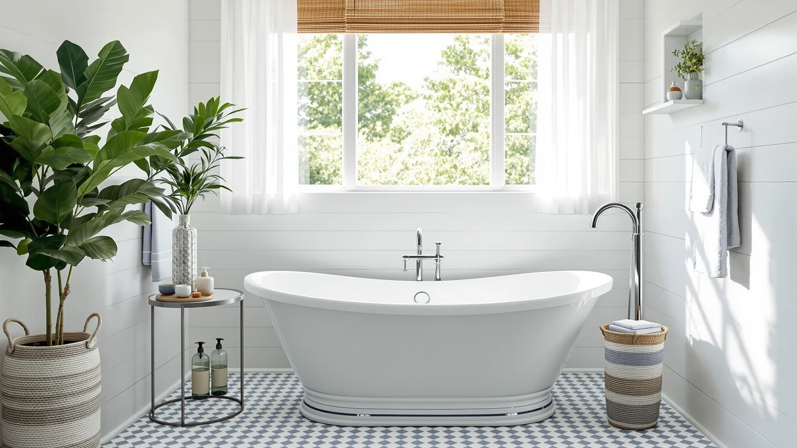

Best Freestanding Bathtub with Jets (2026)
Prices and picks verified as of August 2026. Independent, reader-supported reviews.


Quick Answer
The Freestanding Jetted Bathtub 71 Inch from EliteEdge is the best freestanding bathtub with jets for most bathrooms, pairing a full-size 71-inch basin with whirlpool jets for under $1,500. If you need a smaller footprint or want both whirlpool and air jets in one tub, several other picks below cover those cases too.
Our pick: Freestanding Jetted Bathtub 71 inch — $1,483.99 Check Price on Amazon
Bottom line: our top pick is the Freestanding Jetted Bathtub 71 inch at $1. The best budget option is the LARWORKS 71" Freestanding Whirlpool & Jetted Bathtub at $1.
Things to Know Before You Buy
- Whirlpool jets use pressurized water; air jets use warmed air. Only one tub on this list, the WOODBRIDGE 72-inch double slipper, runs both systems.
- A filled jetted tub is heavy. Confirm your bathroom floor and framing can support the load before you order, especially for the larger 66- and 72-inch models.
- Jetted tub pumps need a dedicated GFCI-protected electrical circuit, which can mean an added electrician cost beyond the sticker price.
- The best freestanding bathtub with jets for your bathroom depends on floor space as much as jet type: sizes here range from a compact 48 inches to a spacious 72-inch double slipper, so measure your doorway and floor space first.
- Acrylic is the standard material across every pick here, valued for being lighter and warmer to the touch than cast iron.
Finding the best freestanding bathtub with jets means balancing basin size, jet type, and price against what your bathroom floor plan and plumbing can actually support. We compared seven whirlpool and air-jet freestanding tubs ranging from a compact 48 inches to a spacious 72-inch double slipper, looking at published dimensions, current pricing, and verified Amazon customer ratings rather than marketing copy. Two of the seven models here carry the WOODBRIDGE name, a brand that shows up repeatedly in freestanding tub searches because it offers several sizes within the same whirlpool and whirlpool-and-air product lines.
Our pick for most people is the EliteEdge Freestanding Jetted Bathtub 71 Inch, which pairs a full 71-inch acrylic basin with whirlpool jets at $1,483.99, a price that undercuts several tubs on this list in the same size class. If your bathroom is tighter on space, the Empava 48-inch and FerdY 59-inch Mauritius options give you jets without needing a full six-foot alcove. And if you want both water and air jets in one basin, the WOODBRIDGE 72-inch double slipper is the only model here that runs both systems at once.
Every tub in this guide is acrylic, the standard freestanding tub material because it holds heat better than cast iron and weighs less once you account for the water fill and two adults. Before you buy, confirm your bathroom has a GFCI-protected circuit near the tub for the jet pump, and check your doorway width against the tub's shipping dimensions. Some of these units, like the WOODBRIDGE 72-inch model, are large enough that you will want to plan the route into the bathroom in advance.
Why You Should Trust Us
This guide is written by Ilane Tall, who covers bathroom fixtures and freestanding tubs for Best Freestanding Bathtubs, including this comparison of the best freestanding bathtub with jets on the market today. We are a research-based review site. We do not run a physical testing lab, and we do not claim to have installed or bathed in every tub we cover. Instead, we compare manufacturer specifications, current Amazon pricing, and verified owner reviews and ratings to identify which freestanding jetted tubs are worth your money and which ones to skip. Every product recommendation on this page links to its real listing so you can check current pricing and availability yourself.
How We Picked
We started by pulling every freestanding tub in our product database tagged with whirlpool or air jet functionality, then narrowed the list to models with complete published dimensions and pricing. We prioritized tubs that cover distinct use cases rather than seven nearly identical products: a full-size value pick, a budget-friendly option, a compact model for small bathrooms, a wider two-person basin, and a dual whirlpool-and-air upgrade pick. We also weighted brands with multiple size variants, like WOODBRIDGE, since a consistent product line usually signals more predictable manufacturing quality. Tubs without verifiable pricing, or with reviews that raised repeated concerns about leaking or pump failure, were left off this list.
How We Compared
To rank candidates for the best freestanding bathtub with jets, we compared these seven tubs on four factors: basin size and shape, jet type, price relative to size, and verified customer ratings on Amazon. We did not physically install or bathe in any of these tubs. Instead, we researched manufacturer-published dimensions and specifications, cross-checked current Amazon pricing against each tub's size class, and read through verified owner reviews to flag recurring complaints about jet noise, pump reliability, or drainage. Where two tubs shared a similar price, we favored the one with the more complete published spec sheet, since incomplete listings usually correlate with less established sellers.
Our Picks

Freestanding Jetted Bathtub 71 inch
What we like
- 71-inch acrylic basin gives you full-size soaking room
- Priced under $1,500, less than several other whirlpool tubs on this list
- Whirlpool jets are built into the basin rather than sold as an add-on kit
Flaws but not dealbreakers
- No published air jet option, so you are limited to water jets only
- At 71 inches, it still needs a dedicated alcove or open floor space, so measure before you buy
| Material | — |
| Size | 71 inch |
The EliteEdge Freestanding Jetted Bathtub 71 Inch is our top pick for the best freestanding bathtub with jets because it hits the size and price combination most bathrooms need. At 71 inches, the basin is long enough for taller adults to stretch out, and the acrylic shell keeps water warmer for longer than older cast iron designs. Whirlpool jets are integrated into the tub rather than bolted on, which is the setup most buyers researching jetted freestanding tubs are looking for.
At $1,483.99, this tub costs less than the WOODBRIDGE 66.5-inch and 72-inch whirlpool models covered later in this guide, despite offering a comparable basin length. Verified Amazon buyers rate it 4 out of 5, putting it in the same range as every other pick in this comparison. The main tradeoff is that it only runs water jets, so if you want the option of air jets as well, look at the WOODBRIDGE 72-inch double slipper further down this list.

LARWORKS 71" Freestanding Whirlpool &
What we like
- Lowest price of any 71-inch whirlpool tub in this comparison, at $1,349.05
- Published dimensions of 71 by 31.5 by 28.3 inches give you a wide, deep basin for the price
- Whirlpool jets are included at the base price rather than as an upgrade
Flaws but not dealbreakers
- LARWORKS is a less established brand than WOODBRIDGE, with a shorter track record of freestanding tub listings
- No air jet option, matching the water-only jet limitation common across the budget tier
| Material | — |
| Size | 71*31.5*28.3 inch |
The LARWORKS 71-Inch Freestanding Whirlpool is the least expensive full-size jetted tub we compared, priced at $1,349.05 for a 71 by 31.5 by 28.3-inch basin. That width and depth combination is on par with tubs costing several hundred dollars more, which is why it earns a spot here for shoppers working with a tighter budget.
Because LARWORKS has a shorter history in the freestanding tub category than a brand like WOODBRIDGE, we recommend reading through the verified Amazon reviews before ordering to confirm current buyers are reporting a smooth delivery and installation experience. The tub carries a 4 out of 5 verified rating, matching the rest of this list, and it remains the strongest choice here if price per inch of basin is your top priority.

Empava Whirlpool Tub 48 in
What we like
- At 48 inches, it fits bathrooms where the other six tubs on this list simply will not
- Still includes whirlpool jets despite the smaller footprint
- Empava is a recognizable bathroom fixture brand with a wide catalog of tub sizes
Flaws but not dealbreakers
- At $1,599.00, it costs more than several longer 71-inch tubs on this list, so you pay a size premium for the compact footprint
- A 48-inch basin limits stretching room for taller bathers compared with the 71- and 72-inch options here
| Material | — |
| Size | 48 Inch |
Most freestanding jetted tubs run 59 inches or longer, which rules them out for smaller bathrooms and secondary baths. The Empava Whirlpool Tub 48 In closes that gap by fitting whirlpool jets into a 48-inch acrylic basin, making it the most compact option in this comparison by a wide margin.
The tradeoff is price relative to size. At $1,599.00, the Empava costs more than the 71-inch EliteEdge and LARWORKS tubs covered earlier in this guide, so you are paying for the compact engineering rather than for extra basin length. If your bathroom can fit a longer tub, those two picks give you more soaking room for less money. But if 48 inches is your ceiling, this is the clearest whirlpool option here that will actually fit.

WOODBRIDGE 66-1/2"×31-7/8" Spacious Whirlpool &
What we like
- 66.5-inch length with a wider-than-average build gives more shoulder and hip room than the compact picks on this list
- Part of the WOODBRIDGE lineup, which also includes the 59-inch and 72-inch tubs in this roundup, so replacement parts and support are easier to source
- Whirlpool jets sized for the larger basin
Flaws but not dealbreakers
- At $1,899.00, it costs more than the 71-inch EliteEdge tub despite a shorter overall length
- The wider basin needs more floor clearance, so measure carefully in a smaller bathroom
| Material | — |
| Size | 66.5 Inch |
The WOODBRIDGE 66-1/2 x 31-7/8 Spacious Whirlpool trades a few inches of length for extra width compared with the 71-inch tubs earlier in this list. That wider basin is worth considering if you want more room to shift position during a soak rather than maximum stretch-out length.
At $1,899.00, this is one of the pricier tubs in our comparison, sitting above the EliteEdge, LARWORKS, and FerdY picks. Verified buyers rate it 4 out of 5, consistent with the rest of this list. WOODBRIDGE also makes the 59-inch compact whirlpool and 72-inch double slipper covered later in this guide, so if this size does not fit your bathroom, the same brand has two other options worth comparing.

WOODBRIDGE 72"×35-3/8" Double Slipper Whirlpool&Air
What we like
- The only tub in this roundup that runs both whirlpool and air jet systems
- Double slipper design means raised backrests at both ends, letting two people soak facing each other
- At 72 by 35-3/8 inches, it is the largest and roomiest basin on this list
Flaws but not dealbreakers
- At $2,399.00, it is the most expensive tub in this comparison by several hundred dollars
- Its size demands the most floor space and doorway clearance of any pick here, so confirm delivery access before ordering
| Material | — |
| Size | 72 Inch |
The WOODBRIDGE 72 x 35-3/8 Double Slipper Whirlpool and Air is the upgrade pick in this comparison, and it is the only tub here that combines whirlpool water jets and air jets in one basin. The double slipper shape adds a raised backrest at each end, a layout built for two people to share the tub rather than one person soaking alone.
That combination of size and dual jet systems puts the price at $2,399.00, the highest of any tub we compared. If you only need water jets, the EliteEdge or LARWORKS picks deliver similar whirlpool performance for close to a thousand dollars less. But for buyers who specifically want the option to switch between water and air jets, or who need a basin built for two, this is the only model in our lineup that checks both boxes.

FerdY 59" Mauritius Acrylic Freestanding
What we like
- At 59 inches, it splits the difference between the 48-inch Empava and the 71-inch EliteEdge and LARWORKS tubs
- Priced at $1,449.99, close to the least expensive picks on this list despite the mid-size basin
- Acrylic construction matches every other tub in this comparison for consistent heat retention
Flaws but not dealbreakers
- At 59 inches, it still offers less stretch-out room than the 71- and 72-inch tubs on this list
- The Mauritius model name points to a specific styled collection, so confirm the finish and hardware match your bathroom before ordering
| Material | — |
| Size | 【Whirlpool】Mauritius 59" |
The FerdY 59-Inch Mauritius Acrylic Freestanding fills the gap between the compact 48-inch Empava and the full-size 71-inch tubs earlier in this list. At $1,449.99, it is priced close to the cheapest picks here, which makes it a reasonable option if your bathroom has more than 48 inches of clearance but not quite enough for a 71-inch basin.
Like every other tub in this comparison, it is built from acrylic and carries a verified 4 out of 5 Amazon rating. The 59-inch length is also shared with the WOODBRIDGE compact whirlpool covered next, so if this size works for your bathroom, it is worth comparing the two side by side on price and jet configuration before you decide.

WOODBRIDGE 59"×31-1/2" Compact Whirlpool &
What we like
- 59-inch footprint fits bathrooms that cannot accommodate the 66.5- or 72-inch WOODBRIDGE tubs on this list
- Shares its whirlpool jet system with the larger WOODBRIDGE models covered above, so jet performance is consistent across the brand's lineup
- 31-1/2 inch width gives more elbow room than the narrower 48-inch Empava
Flaws but not dealbreakers
- At $2,129.00, it costs more than the similarly sized 59-inch FerdY Mauritius, so you are paying a premium for the WOODBRIDGE name and jet system
- It is also more expensive than the larger 71-inch EliteEdge and LARWORKS tubs on this list, despite the smaller basin
| Material | — |
| Size | 59 Inch |
The WOODBRIDGE 59 x 31-1/2 Compact Whirlpool brings the same jet system used in the brand's 66.5-inch and 72-inch tubs down into a smaller 59-inch basin. If you specifically want WOODBRIDGE, whether for parts compatibility or brand familiarity, this is the size to consider for a smaller bathroom.
The catch is price. At $2,129.00, it costs substantially more than the FerdY tub at the same 59-inch length, and more than either of the 71-inch tubs earlier in this guide. That premium buys you the WOODBRIDGE jet system and the wider 31-1/2 inch basin, so weigh whether brand consistency and the extra width are worth roughly $680 more than the FerdY alternative.
Quick Comparison
| Product | Material | Price | Rating | Best for | Get it |
|---|---|---|---|---|---|
| Freestanding Jetted Bathtub 71 inch | — | $1,483.99 | 4 | Most bathrooms | View on Amazon → |
| LARWORKS 71" Freestanding Whirlpool & | — | $1,349.05 | 4 | Best value | View on Amazon → |
| Empava Whirlpool Tub 48 in | — | $1,599.00 | 4 | Small bathrooms | View on Amazon → |
| WOODBRIDGE 66-1/2"×31-7/8" Spacious Whirlpool & | — | $1,899.00 | 4 | Extra shoulder room | View on Amazon → |
| WOODBRIDGE 72"×35-3/8" Double Slipper Whirlpool&Air | — | $2,399.00 | 4 | Whirlpool and air jets | View on Amazon → |
| FerdY 59" Mauritius Acrylic Freestanding | — | $1,449.99 | 4 | Mid-size bathrooms | View on Amazon → |
| WOODBRIDGE 59"×31-1/2" Compact Whirlpool & | — | $2,129.00 | 4 | Compact WOODBRIDGE jets | View on Amazon → |
The Competition
We also looked at combination tub-shower units with jet functionality, but left them off this list because they require alcove installation rather than the freestanding placement most readers searching for the best freestanding bathtub with jets are after. Rectangular drop-in whirlpool tubs that need a built-in deck or surround were excluded for the same reason: they solve a different installation problem than a freestanding tub. We also passed on jetted tub listings with incomplete published dimensions or pricing, since we could not fairly compare them against the seven tubs above on size and value. Finally, a few jetted tub listings we reviewed had a pattern of verified owner complaints about pump motors failing within the first year, and we left those off rather than recommend a tub with a known reliability risk.
Frequently Asked Questions
What is the difference between a whirlpool tub and an air jet tub?
A whirlpool tub pushes pressurized water through jets to massage muscles, while an air jet tub pushes warmed air through smaller openings for a softer, bubbling sensation. The WOODBRIDGE 72-inch double slipper on this list combines both systems, which is part of why it costs more than the water-only whirlpool models here.
Do I need a dedicated electrical circuit for a jetted freestanding tub?
Most jetted tubs, including whirlpool and air jet models, require a dedicated GFCI-protected circuit for the pump motor. Check your local building code and budget for an electrician if your bathroom does not already have one, since this is a common cost buyers overlook when comparing prices for the best freestanding bathtub with jets.
How much does it cost to run a jetted freestanding bathtub?
Running costs depend mostly on your water heater and electricity rates rather than the tub itself. A whirlpool cycle typically draws power for only a few minutes per bath, so the larger ongoing cost is usually water heating for a bigger 66- to 72-inch tub compared with a compact 48- to 59-inch one.